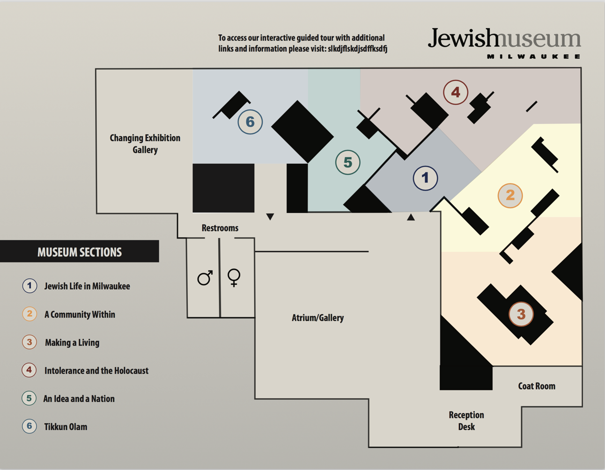
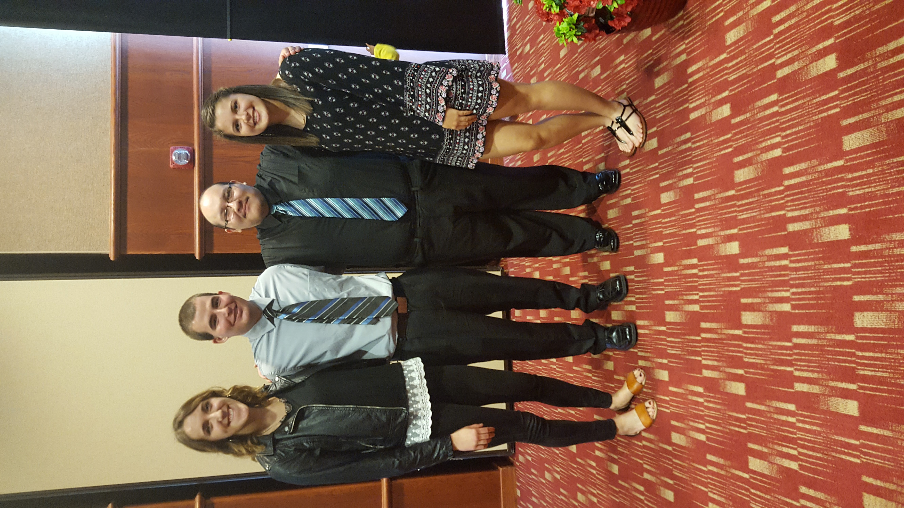

Projects
Jewish Museum: Guided Tour Project

As part of our maor project for our Senior Semniar class, Computer Scientists were placed with various other people from other majors to help the Milwaukee Jewish Museum (JM) solve an IT issue they had. Our Project was the, "Guided Tour". The JM expresed need for some sort of framework in which visitors could enter the museum and self guided themselves throughout the exhibitions. Instead of giving them a "framework", our group decided to create an interactice mobile map in which a user could select a section of the meuseum (presented to them in mobile form) and get extra information on that section.
As the Computer Scientist on the group, I developed a website using HTML, CSS, CSS3, and Bootstrap to create an interactive map. When the user accssesed the site, he/she would be prompted to select a section of the map (via touch screen for phones, tablets, or click with computer) and using FancyBox (jquery light box), information of that section would appear on the screen. The user then could scroll down, click on a video, or select audio to play from. The user would then have the option to exit the light box and move (select) on to a new section. A training manuel as well as easy update to the software guide was included with the website.
At the conclusion of the semester the four groups that worked for the JM presented their projects in a professional setting in front of an audience including, teachers, quests, employees and Museum pannel.
Interdisciplinary Presentation

At the end of each year a presentation is done by students who have completed a major project. Each year student projects are selected and they have the chance to present thier projects to the current graduating class, as well as important guests, teachers, students and faculty. I was selected to give a debrefing about our project and the process we took to solve our problem. Other members of the Computer Science groups also partipated in the prestigous presentation.
Senior Recital: Solo Piano Recital

To wrap up my music degree I will give my final piano recital at Cardinal Stritch in the Nancy Kendall Theatre, This spring 2017. I have worked hard to prepare a program that exidits my abilities as a pianst, and the devices I have learned during my time at Stritch. I will be the last piano major to give a recital at the now closing, Stritch Music program. Below is my selected program for my piano recital.
Program
Domenico Scarlatti - Piano Sonata in G Major and g minor
Alberto Ginastera - Danzas Argentinas no 1 & 2
Johanas Brahms - Intermezzo in A major Op. 118
Ludwig Van Beethoven - Piano Sonata No. 24 "Appasionata" Mov. 1 & 3